Meet the Founder
Founder Maggie Bera is an actress based in NYC with a BFA in Musical Theatre from Texas State University. Regionally she appeared as Aquata, u/s Ariel in The Little Mermaid and Christine Daaé u/s in Phantom at the Fireside Theatre, as Lucy Van Pelt in The World According to Snoopy at Theatre Under The Stars choreographed by Adam Cates (Gentleman's Guide, Anastasia), Les Miserables at Connecticut Repertory Theatre directed by Broadway legend and Tony nominated Terrence Mann, and as Wendy in Peter Pan starring Riley Costello (Bye Bye Birdie, 13!, Everyday Rapture) and Terrence Mann (Les Miserables, Beauty and the Beast, Pippin). Maggie has guest starred in Showtime's The Big C starring Laura Linney, and has appeared in numerous commercials, print and radio ads. Maggie is a proud member of AEA and SAG-AFTRA.
About Actor Aesthetic

In 2017, Maggie created Actor Aesthetic - a blog, podcast, and online learning community - to continue educating artists pursuing a career in the theatre industry. She currently has four online courses available, including The Essential Guide to Instagram for Actors, Build Your Audition Book, How To Successfully Submit To Casting Directors (Without An Agent Or Manager), and The Ultimate Guide To Preparing For Musical Theatre College Auditions (In 5 Steps!).
In early 2020, she wrote her first e-Book, Marketing 101 For Actors: An Actor’s Guide To Successful Branding, and has since taught her workshop, An Actor’s Online Presence, to college programs in the United States. Her work has been featured on Broadway World, Backstage, Playbill, Medium, The Broadway Collective, and more!
Additional Hype
Babes Who Hustle
Broadway World
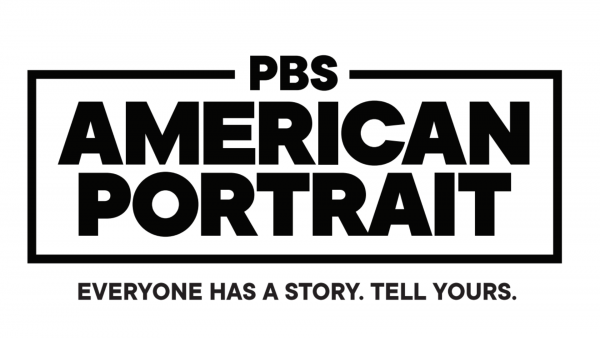
PBS American Portrait
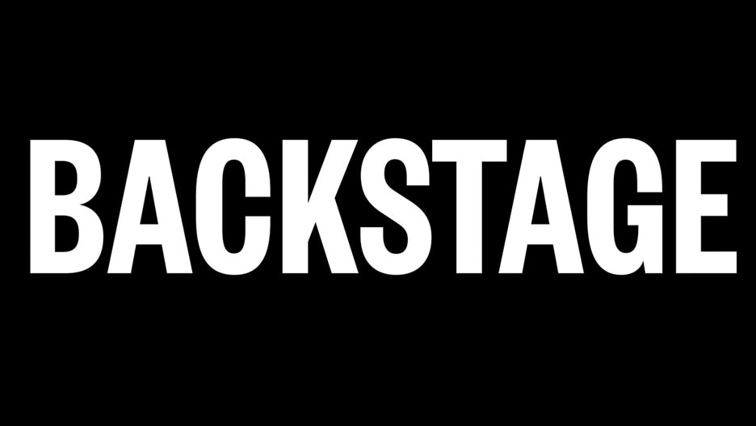
Backstage
Maggie holds BFA in Musical Theatre from Texas State University and a background in professional theatre spanning over 15 years! As an actress, she’s performed off-Broadway and regionally at The Fireside Theater, Theatre Under The Stars, Connecticut Repertory Theatre, and The Count Basie Theatre. On TV, she guest starred in Showtime's The Big C starring Laura Linney, and appeared in numerous commercials, print and radio ads. She is a proud member of Actors’ Equity, the Screen Actors Guild, and currently represented by Professional Artists Agency in NYC..
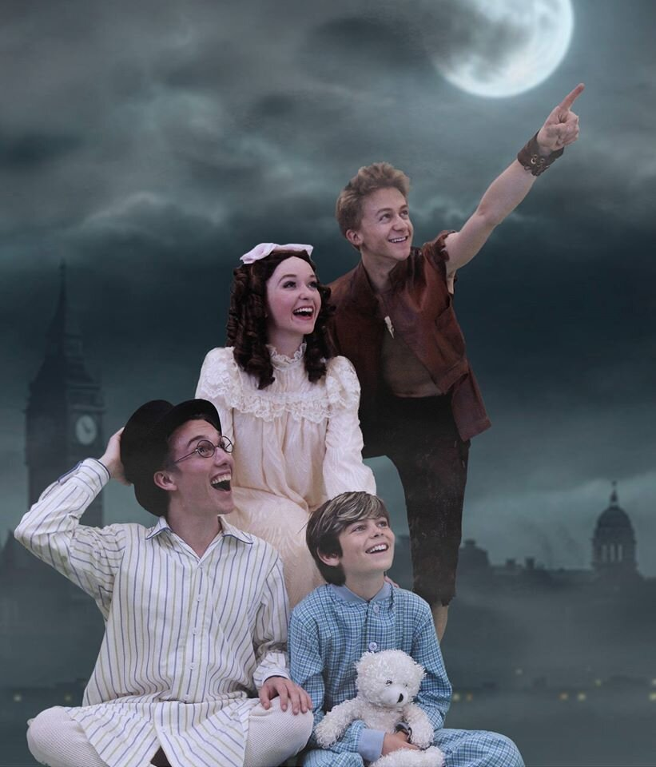 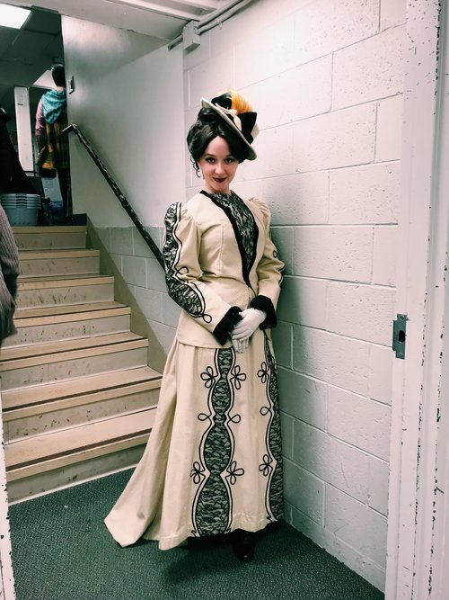 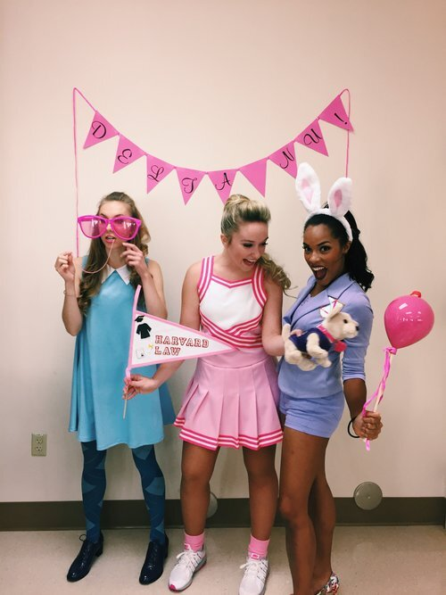In 2017 Maggie created Actor Aesthetic - a blog, podcast, and online learning community - to continue educating artists pursuing a career in the theatre industry. She currently has four online courses available, including The Essential Guide to Instagram for Actors, Build Your Audition Book, How To Successfully Submit To Casting Directors (Without An Agent Or Manager), and The Ultimate Guide To Preparing For Musical Theatre College Auditions (In 5 Steps!). In early 2020, she wrote her first e-Book, Marketing 101 For Actors: An Actor’s Guide To Successful Branding, and has since taught her workshop, An Actor’s Online Presence, to college programs in the United States.
For 7+ years, Maggie has been hosting one-on-one coaching sessions to give actors all the tools they need to:
- Build your musical theatre audition book
- Analyze the text and personally connect to your material
- Massively improve your audition techniques
- Define your brand as an actor
- Successfully prep for auditions and book that job!
Jennifer Apple is a multi-hyphenated artist who hails from NYC and is a huge fan of new work & truthful storytelling. She currently plays the role of Anna in The Band's Visit tour and has performed at regional theaters like Chautauqua Theater Company, ACT, Goodspeed Musicals, and Pennsylvania Shakespeare Festival. She has appeared on TV in "New Amsterdam" and holds an MFA in Acting from The American Conservatory Theater. Jennifer is also an acting coach specializing in: BFA/MFA auditions; finding new monologues specifically for you; acting the song/monologue coaching; Shakespeare & scene study. Feel free to check out more on her website at www.JenniferApple.net or follow along her personal journey on IG @JenniferApple_
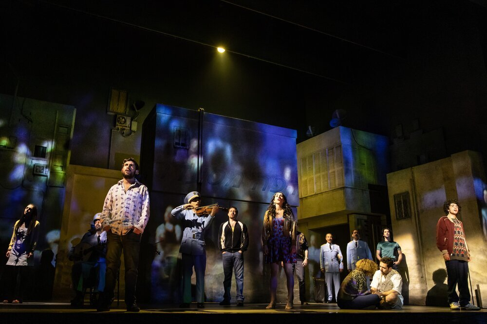
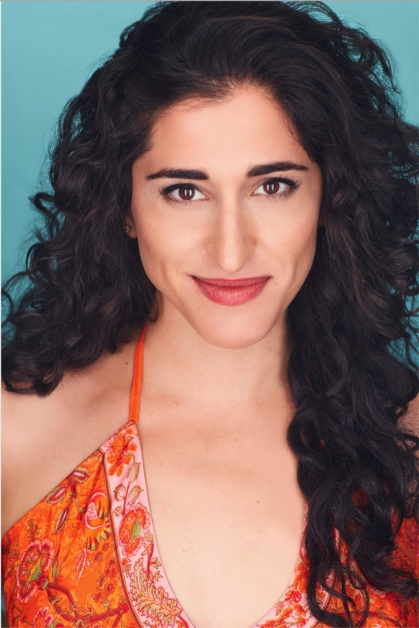
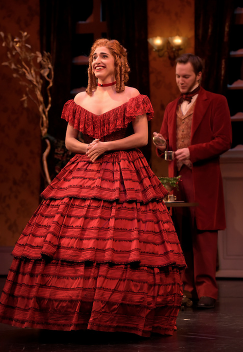
Monologue Coaching
Do you have a monologue you’ve just begun to work on, a piece for an upcoming audition, or perhaps an old monologue that needs some new life? Then let's make it happen! Whether it be through a contemporary, classical, or Shakespeare piece, Jennifer will help you:
- Break down the text (with her signature Punctuation Map & WWWWH!)
- Learn the fundamentals of approaching material
- Teach you tricks for personalizing the piece to make it yours (with some wonderful Dropping In!)
- Shortcuts on memorization
- Bring out ways to make your piece stand out through truthfulness and honesty
- Embrace the storyteller in YOU!
Monologue Sourcing
Knowing the audition circuit, putting material on tape, and having gone through the BFA & MFA audition process (successfully!), Jennifer definitely understands that the search for finding the “Perfect Monologue” is absolutely exhausting. Well, that search ends now! Jennifer will find 8+ pieces specifically picked for YOU!
In this package you will:
- Have an in depth conversation about what makes you tick, what you love, what interests you etc. you as a human. Ie: What makes you, YOU!
- Jennifer will go off and find 8+ monologues specifically chosen for you & your needs
- You reunite to read & rank the pieces
- They are all yours for the keeping and to do with as you choose!
Liliana’s dance credits include: The Rockette Summer Experience (MSG Varsity), Let Freedom Ring with George Lopez (CBS), and Norwegian Cruise Line. Theatrically, she’s performed off-Broadway in Nickel Mines at the New York Musical Theatre Festival, regionally in La Cage Aux Folles at the Red House Arts Center, and in numerous productions at Texas State (including Legally Blonde and A Chorus Line, which each have over 1 MILLION views on YouTube!). She holds a BFA in Musical Theatre from Texas State University. Proud member of SAG-AFTRA.
Aside from performing, Liliana is passionate about both fitness and baking. She is a barre-workout fanatic and swears that her best days are those when she has the chance to pulse until her muscles shake! Creating and sharing baked goods is Liliana's way of spreading love. Every time a birthday or a holiday rolls around, you can count on her to have a sweet treat ready to bring smiles to people's faces.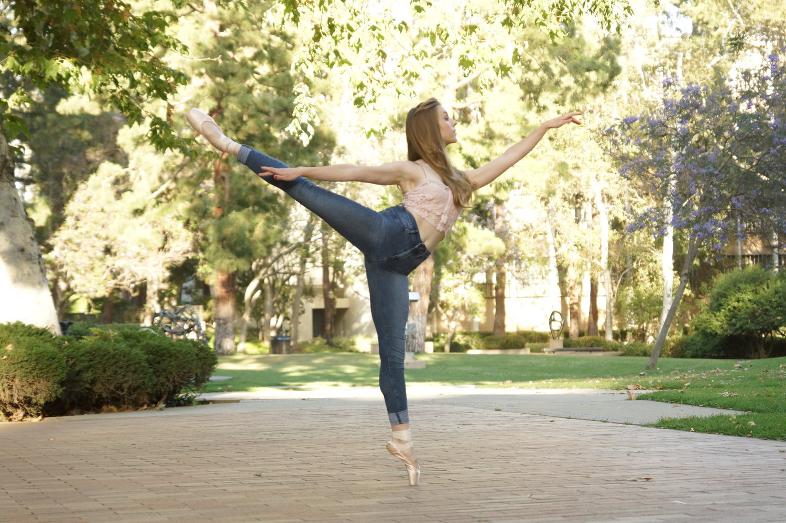 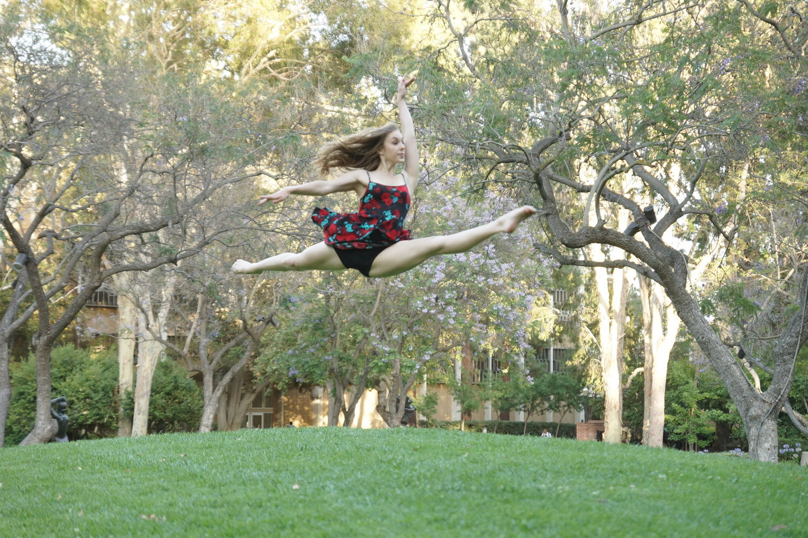
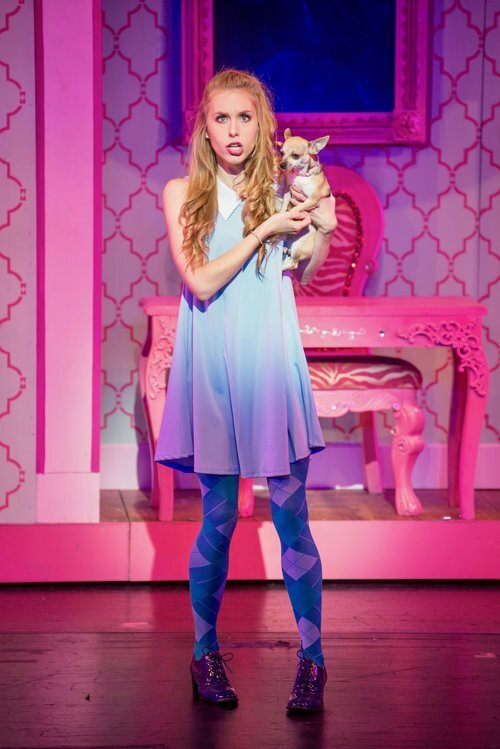